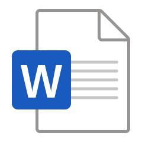
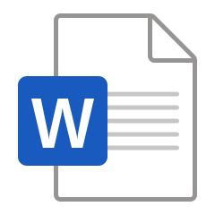

Open Educational Resources
Open educational resources are learning materials that are made available for others to freely adapt and remix in their own teaching and learning. The materials presented here involve the first secular women's magazine in Britain, the Englishwoman's Domestic Magazine, which was published between 1852-1879, in London, especially during the period when it was run by editors Samuel O. Beeton and Isabella Mary Mayson Beeton, between 1852 and 1865.
OER 1: "Female Education" Essay, 1852
This is a lesson plan based on an essay from the very first number of the EDM in 1852.
It includes a slideshow in Google Slides, as well as readings for students that include the text of the essay in its original magazine-page form and as plain text.
Preview images below link directly to each file.

Additional formats for each file are available in this folder.
OER 2: Consecutive Issues Assignment
This is a project assignment based on students reading consecutive issues of a historic magazine.
It makes use of the open-access index to the Englishwoman's Domestic Magazine developed for my dissertation project, but could be used with other publications instead.
Users can adapt this material as either a group or individual project assignment. It is available as a DOCX and PDF file below.
 


OER 3: Text Analysis Activity
This is a planned activity for students to try out digital textual analysis using Voyant Tools.
It makes use of the transcribed correspondence from the Englishwoman's Domestic Magazine developed for my dissertation project, but also includes options for other linguistic corpora.
Users can adapt this material as needed. It is available as a DOCX and PDF file below.
What project did these resources come from?
Defended in 2024, my doctoral dissertation is now available open-access at:
[ ODU Digital Commons ]
If you have a specific question, please feel free to reach out to me.
How can I use, adapt, or remix these materials in my own work?
You are welcome to try them out in any non-commercial setting and adapt them to meet your needs.
How can I contact Julie?
Email is usually easiest: juliesorgeway at gmail dot com will find me.
Several other platforms are listed on my profile page and website.
Banner Image Attribution
The banner image was created in Microsoft Designer using two Wikimedia Commons images, one of Isabella Beeton and one of the September 1861 cover of the Englishwoman's Domestic Magazine.
This blue cover was designed for the second series rebranding while Isabella Beeton was working as an editor.
1: Maull & Polyblank, Public domain, via Wikimedia Commons
2: Beeton & Co, Public domain, via Wikimedia Commons
[ Return to Project Main Page ]
Broken Links? Noticed a Problem? Please let me know: juliesorgeway at gmail
This page was developed and improved with the accessibility recommendations of the Web Content Accessibility Guidelines (WCAG) 2.1.
To read more on this topic, see Marissa Sapega's 2020 article The History of Digital Accessibility and Why It Matters.
Last updated October 9, 2023.
{kind=link}
{kind=link}